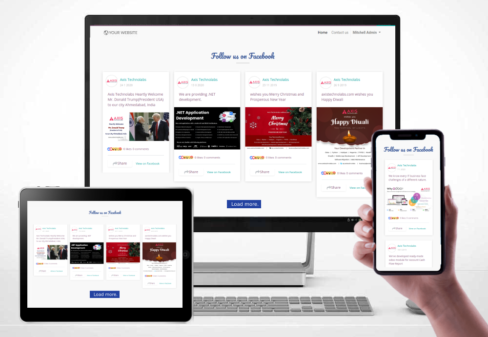
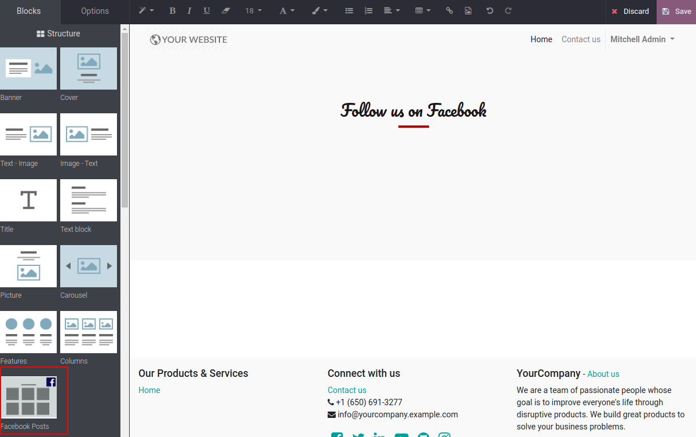
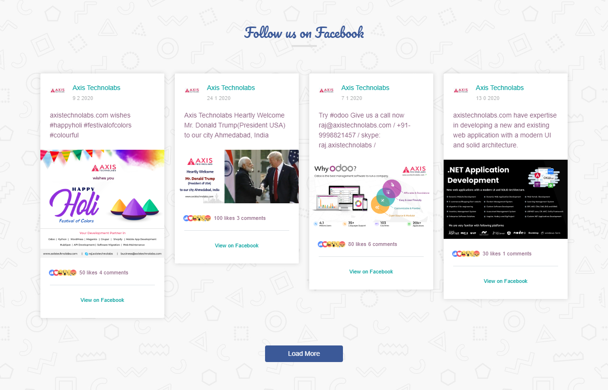

Facebook snippet in odoo, Facebook post in odoo, Website Facebook Feed in odoo
Facebook snippet in odoo Facebook post in odoo, Website Facebook Feed in odoo module allows you to Display Facebook posts in odoo website. Completely customized, responsive and search engine crawlable. Display multiple Facebook feeds from any Facebook page and completely match the look and feel of the site with Facebook integration in odoo module. This facebook post snippet in odoo, Allows you to display text and links from Facebook posts. To display photos, videos, comments, and more.
WATCH VIDEO DEMO FOR FACEBOOK POST SNIPPET IN ODOO USER GUIDELINE DOCUMENTATIONTHIS FACEBOOK FEED SNIPPET FEATURES:
Easy to Setup
1 minute quick setup with Facebook Developer App required for generate token
Any Facebook Page
Get all post from any facebook page, just create app id from facebook developer
Same UI Facebook Post
Completely customized and UI look like real facebook style and other detail
Fully Responsive
The layout looks great on any screen size such as mobile, table and desktop
Faster Load More
We have implemented load more feature for load more post of your facebook
Masonry View for Post
All your facebook post will show in Masonry UI for View and grid layout
Show more / Less
You will see the show more and show less button for long description
Share in Social Media
We added share button for post sharing from your website to other social media
View in Facebook
View in facebook, this is allow to users for navigate to your facebook page’s post
BENEFITS OF THIS MODULE (Facebook post in odoo):
-
01
Increase social engagement between you and your users, customers, or website visitors.
-
02
Save time by using the Custom Facebook Feed to generate search engine content.
-
03
Display your Facebook content your way to perfectly match your website’s style.
-
04
The module is updated regularly with new features, bug-fixes and Facebook API changes.
-
05
We’re providing the most customization, effective and quick support for all our apps.
Installation steps of facebook snippet in odoo
Display Facebook posts in odoo website. Completely customized, responsive and search engine crawlable. Display multiple Facebook feeds from any Facebook page and completely match the look and feel of the site with tons of customization options.
Website Configurations, Set Facebook App ID
Link to find PageID of your Facebook account:
Facebook Configuration Process
Link to Generate Token your Facebook account:
https://developers.facebook.com/apps
Set the Facebook Configuration

Click on test connection button

Drag and Drop Facebook posts snippet in odoo website editor.
After clicked on Save, Facebook post snippet look like following and load more button



For Technical Help and Support
At Axistechnolabs we offer end to end solution for Odoo services. Which includes analysis & consultation on the workflows and integration part.
Incase of any question regarding this module feel free to email us on business@axistechnolabs.com